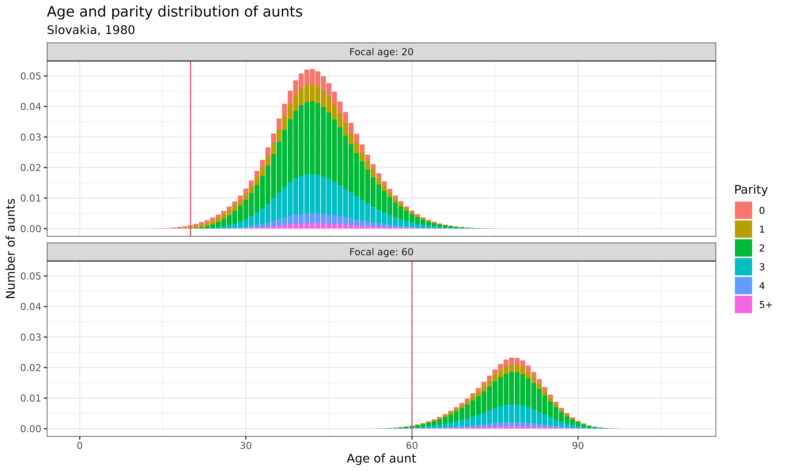
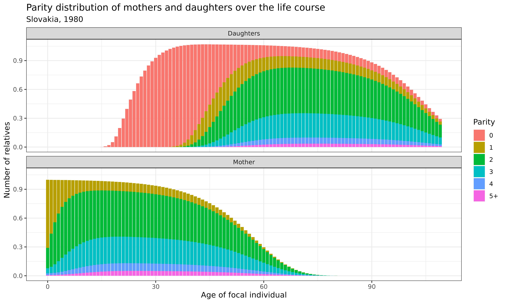

vignettes/2_1_OneSex_TimeInvariant_AgeStage.Rmd
2_1_OneSex_TimeInvariant_AgeStage.RmdLearning Objectives: In this vignette, you will learn how to extend the one-sex kinship model to incorporate stages alongside age. You will understand the implementation of multi-state matrix models, explore how demographic processes can vary by stage (e.g., parity), and analyze how these additional dimensions affect kinship structures.
In previous vignettes, we explored kinship models where individuals were classified only by age. However, demographic processes are often influenced by other characteristics beyond age. For example, mortality and fertility rates may vary by marital status, education level, health condition, parity (number of children already born), or other socioeconomic factors.
Multi-state kinship models address this limitation by incorporating both age and stage (additional states) in the analysis. These models allow us to:
In this vignette, we will start from a simple model, one-sex
time-invariant multi-state kinship model, outlined in Caswell
(2020), using the DemoKin
package. We’ll focus specifically on parity as our stage variable, which
allows us to analyze how fertility history affects kinship networks.
If you haven’t already installed the required packages from the previous vignettes, here’s what you’ll need:
# Install basic data analysis packages
install.packages("dplyr") # Data manipulation
install.packages("tidyr") # Data tidying
install.packages("ggplot2") # Data visualization
install.packages("knitr") # Document generation
# Install DemoKin
# DemoKin is available on CRAN (https://cran.r-project.org/web/packages/DemoKin/index.html),
# but we'll use the development version on GitHub (https://github.com/IvanWilli/DemoKin):
install.packages("remotes")
remotes::install_github("IvanWilli/DemoKin")
library(DemoKin) # For kinship analysisIn traditional age-structured models, an individual’s demographic rates depend only on their age. In multi-state models, we expand this framework to consider both age and stage, where “stage” represents another characteristic that influences demographic processes.
Key components of multi-state models include:
These components allow us to build more realistic models of population dynamics and kinship networks by accounting for heterogeneity beyond age.
In this vignette, we’ll focus on parity (the number of children already born to a woman) as our stage variable. Parity is particularly relevant for kinship studies because:
The DemoKin package includes data from Slovakia in 1980,
which we’ll use to implement a parity-based kinship model.
For multi-state models, we need several matrices that specify how
demographic rates vary by both age and stage. Let’s examine the
structure of the Slovakia data included in the DemoKin
package:
# Examine fertility rates by age and parity
head(svk_fxs[1:5, ])## 1 2 3 4 5 6
## out 0 0 0 0 0 0
## elt 0 0 0 0 0 0
## elt 0 0 0 0 0 0
## elt 0 0 0 0 0 0
## elt 0 0 0 0 0 0
# Examine survival probabilities by age and parity
head(svk_pxs[1:5, ])## 1 2 3 4 5 6
## [1,] 0.98267 0.98267 0.98267 0.98267 0.98267 0.98267
## [2,] 0.99858 0.99858 0.99858 0.99858 0.99858 0.99858
## [3,] 0.99928 0.99928 0.99928 0.99928 0.99928 0.99928
## [4,] 0.99962 0.99962 0.99962 0.99962 0.99962 0.99962
## [5,] 0.99979 0.99979 0.99979 0.99979 0.99979 0.99979
# Examine birth matrix (where newborns enter the population)
head(svk_Hxs[1:5, ])## 1 2 3 4 5 6
## out 1 1 1 1 1 1
## elt 0 0 0 0 0 0
## elt 0 0 0 0 0 0
## elt 0 0 0 0 0 0
## elt 0 0 0 0 0 0
# Look at the structure of the transition matrices
typeof(svk_Uxs)## [1] "list"
length(svk_Uxs)## [1] 110
svk_Uxs[[20]] # Transition matrix for age 20## [,1] [,2] [,3] [,4] [,5] [,6]
## [1,] 0.8263006 0.0000000 0.0000000 0.0000000 0.0000000 0
## [2,] 0.1736994 0.8050297 0.0000000 0.0000000 0.0000000 0
## [3,] 0.0000000 0.1949703 0.8794961 0.0000000 0.0000000 0
## [4,] 0.0000000 0.0000000 0.1205039 0.8455037 0.0000000 0
## [5,] 0.0000000 0.0000000 0.0000000 0.1544963 0.8157141 0
## [6,] 0.0000000 0.0000000 0.0000000 0.0000000 0.1842859 1In this dataset:
svk_fxs is a data frame of fertility rates by age
(rows) and parity stage (columns)svk_pxs contains survival probabilities by age and
paritysvk_Hxs specifies where newborns enter the population
(in this case, at parity 0)svk_Uxs is a list of matrices, one for each age,
containing the probabilities of transitioning between parity states
conditional on survivalFor parity, the stages represent:
Let’s examine the transition matrix for a woman of reproductive age to understand how women move between parity states:
# Display the transition matrix for age 25
# This shows probabilities of moving between parity states
svk_Uxs[[25]]## [,1] [,2] [,3] [,4] [,5] [,6]
## [1,] 0.8180248 0.0000000 0.00000000 0.00000000 0.0000000 0
## [2,] 0.1819752 0.7593786 0.00000000 0.00000000 0.0000000 0
## [3,] 0.0000000 0.2406214 0.91107756 0.00000000 0.0000000 0
## [4,] 0.0000000 0.0000000 0.08892244 0.92006759 0.0000000 0
## [5,] 0.0000000 0.0000000 0.00000000 0.07993241 0.8674747 0
## [6,] 0.0000000 0.0000000 0.00000000 0.00000000 0.1325253 1This matrix shows the probabilities of moving from one parity state (columns) to another (rows) for a 25-year-old woman, conditional on survival. Some key observations:
Now let’s implement the multi-state kinship model using the
kin_multi_stage function:
# Use birth_female=1 because fertility is for females only
demokin_svk1980_caswell2020 <-
kin_multi_stage(
U = svk_Uxs, # List of transition matrices
f = svk_fxs, # Fertility rates by age and parity
D = svk_pxs, # Survival probabilities by age and parity
H = svk_Hxs, # Birth matrix
birth_female = 1, # All births are female (one-sex model)
parity = TRUE # Stages represent parity states
)This function computes the joint age-parity distribution of kin for a focal individual under the specified demographic conditions. The output includes information on both the age and parity state of each relative.
Let’s examine how both age and parity are distributed among relatives. First, we’ll look at the age-parity distribution of aunts when the focal individual is 20 and 60 years old:
demokin_svk1980_caswell2020 %>%
filter(kin %in% c("oa","ya"), age_focal %in% c(20,60)) %>%
mutate(parity = as.integer(stage_kin)-1,
parity = case_when(parity == 5 ~ "5+", TRUE ~ as.character(parity))
) %>%
group_by(age_focal, age_kin, parity) %>%
summarise(count = sum(living)) %>%
ggplot() +
geom_bar(aes(x = age_kin, y = count, fill = parity), stat = "identity") +
geom_vline(aes(xintercept = age_focal), col = 2) +
labs(
title = "Age and parity distribution of aunts",
subtitle = "Slovakia, 1980",
x = "Age of aunt",
y = "Number of aunts",
fill = "Parity"
) +
theme_bw() +
facet_wrap(~age_focal, nrow = 2, labeller = labeller(
age_focal = c("20" = "Focal age: 20", "60" = "Focal age: 60")
))
Interpretation: These bar charts show the joint distribution of age and parity for aunts at two different focal ages:
The red vertical line indicates Focal’s age, providing a reference point for comparing the ages of relatives. This joint distribution provides richer information than looking at age or parity alone.
Now let’s examine how the parity distribution of different types of relatives changes over Focal’s life course. We’ll focus on daughters and mothers:
demokin_svk1980_caswell2020 %>%
filter(kin %in% c("d","m")) %>%
mutate(parity = as.integer(stage_kin)-1,
parity = case_when(parity == 5 ~ "5+", TRUE ~ as.character(parity))) %>%
group_by(age_focal, kin, parity) %>%
summarise(count = sum(living)) %>%
DemoKin::rename_kin() %>%
ggplot() +
geom_bar(aes(x = age_focal, y = count, fill = parity), stat = "identity") +
labs(
title = "Parity distribution of mothers and daughters over the life course",
subtitle = "Slovakia, 1980",
x = "Age of focal individual",
y = "Number of relatives",
fill = "Parity"
) +
theme_bw() +
facet_wrap(~kin_label, nrow = 2)
Interpretation: These stacked bar charts reveal how the parity distribution of mothers and daughters evolves across Focal’s life course:
These patterns highlight the intergenerational transmission of fertility behaviors and how demographic patterns ripple through kinship networks.
In this vignette, we’ve explored how to implement one-sex
time-invariant multi-state kinship models using the DemoKin
package. By incorporating both age and stage (parity) in our analysis,
we’ve gained richer insights into the structure of kinship networks than
would be possible with age alone.
Key insights include:
While we focused on parity in this vignette, the
kin_multi_stage function can be used for any state variable
by setting the parameter parity = FALSE (the default). This
flexibility opens up numerous applications: